Sights From A Rainey Drive Home
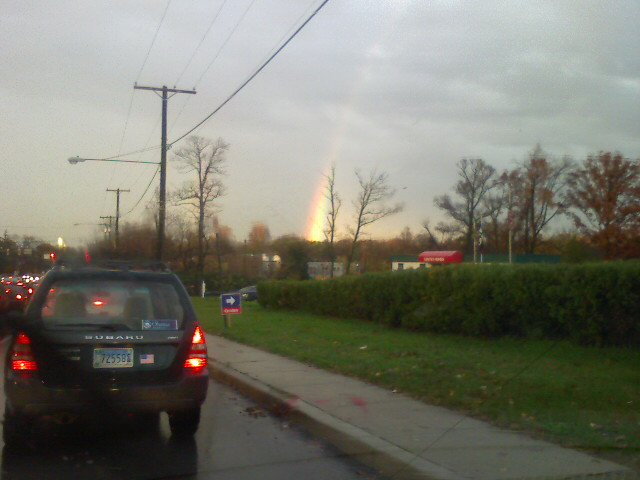
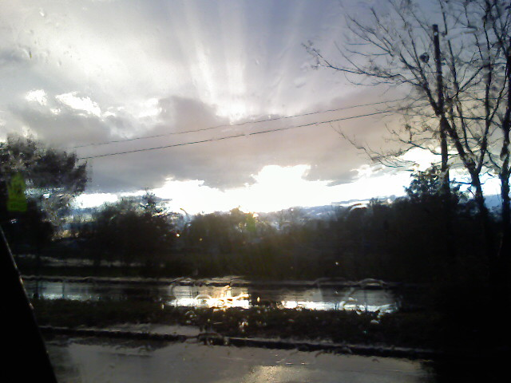
It was raining pretty hard on my drive back from College Park. I just got a haircut at Floyd’s. The sun was below the clouds near the horizon producing a vivid rainbow and ray burst.

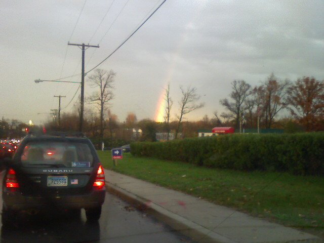
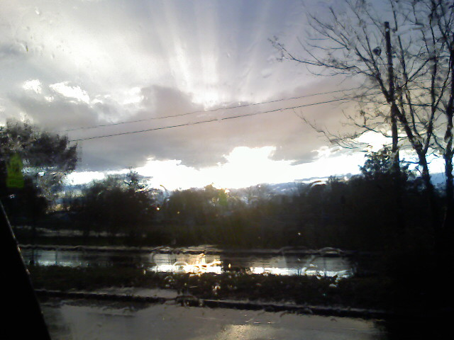
It was raining pretty hard on my drive back from College Park. I just got a haircut at Floyd’s. The sun was below the clouds near the horizon producing a vivid rainbow and ray burst.
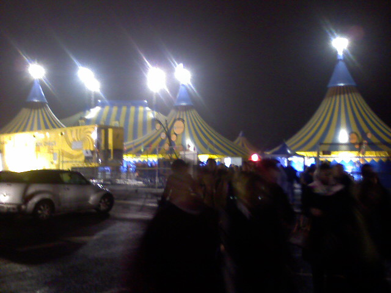
The show ended just as strong as it started. I snapped this picture of the front of the circus tents as we were leaving. Now it’s time to trek home.
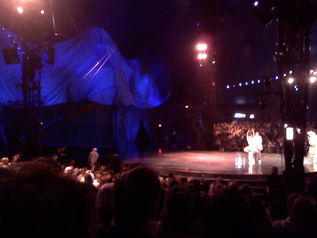
It’s intermission and the performance has been impressive. Kristina and I went to two other Cirque Du Soleils and this one is easily the best. The only slip up was by a tight rope walker who managed to grab on to the wire. The clowns are my favorite part providing comic relief between acts. Looks like the show is about to resume.
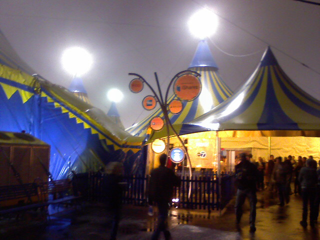
Kristina and I are at the Kooza performance at the National Harbor just outside of Washington DC. Getting in was a breeze and now we’re just waiting for the show to begin at 8.
Today RED camera announced the follow ups to it’s industry-changing RED One camera. As expected the Scarlet and Epic offer higher super high-definition resolutions. What wasn’t expected was the fact that the cameras are completely modular allowing for 2,251,799,813,685,248 possible configurations according to the company.
But what might be more impressive number is the CPU/hard-drive devastating 28K resolution of the Epic sensor. That’s right, the images off of this sensor will be 28,000 pixels wide by 9,334 pixels high… at up to 25 frames per second. For the non high definition geek this means a camera with this sensor will be able to shoot video that is 8 times bigger than the 30″ Apple Cinema display you see all over Apple Stores in your local high-end mall. You know all of those fancy flat-panel TVs you see in electronics stores? They max out at 1920×1080 video. IMAX is about 10,000 pixels wide by 7,000 pixels tall. If you need a visual, Stu Maschwitz put together what the 28K sensor would look like (in gray) compared to a full HD frame size (in red). A single 28K image takes up about 768 MB of space. Holy Crap!
you see all over Apple Stores in your local high-end mall. You know all of those fancy flat-panel TVs you see in electronics stores? They max out at 1920×1080 video. IMAX is about 10,000 pixels wide by 7,000 pixels tall. If you need a visual, Stu Maschwitz put together what the 28K sensor would look like (in gray) compared to a full HD frame size (in red). A single 28K image takes up about 768 MB of space. Holy Crap!
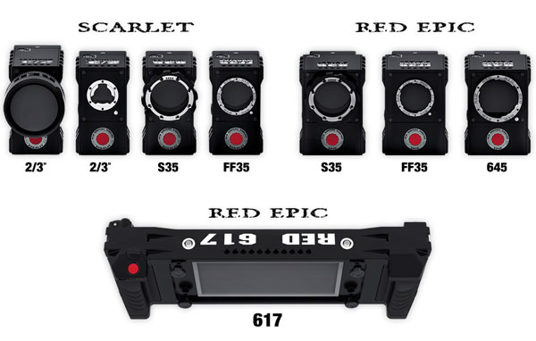
Ironically, the announcement was made with a 1020 x 18,320 JPEG image posted to the RED User forums. This did make it easy to grab these images which I used in this post though.
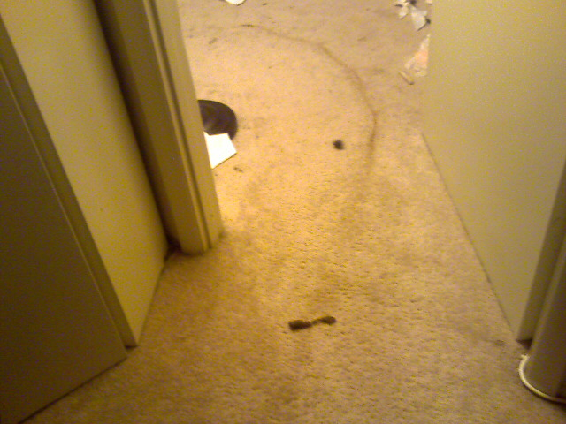
I woke up and saw this curved poo streak in my roommates room. Looks like Puck the cat is looking for attention or nobody cleaned out his litterbox. Check out that arc though.
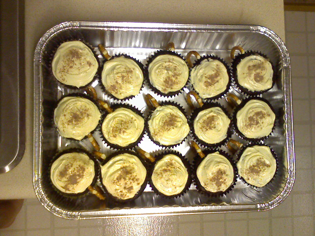
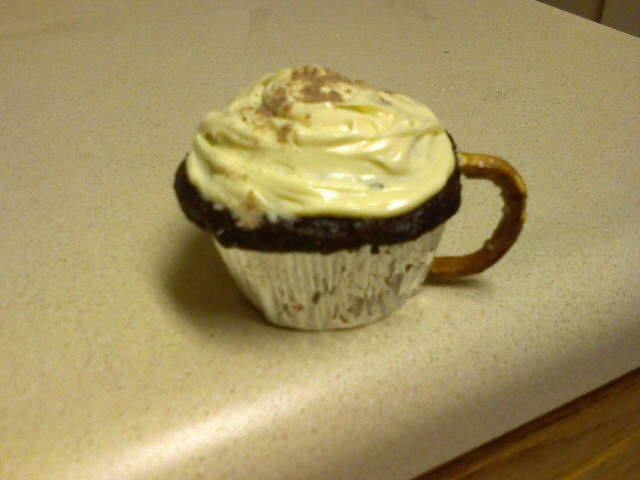
My company’s fall potluck is tomorrow and Kristina decided to make Mocha Cappuccino Cupcakes with Caramel Buttercream frosting. They have a hint of cappuccino and are supposed to look like little coffee cups with froth on top. I bought all the ingredients and did a few peon taks but Kristina did all the baking and decorating. she did a great job because they came out great as you can see. They should be a big hit tomorrow.
It’s not everyday that a single news event makes the homepage of every single news site across the globe at the same time. But the U.S. election results did just that. Many news sites experienced record-breaking numbers including CNN.com which served 276 million pageviews to 27 million unique visitors on Tuesday. Akamai, the content delivery network for most of the top news sites, reported a peak of 8,572,042 visitors per minute around 11pm last night. Hitwise compiled the traffic stats for the top 24 news sites from yesterday.
Shortly after Barack Obama was declared the projected winner, I started taking full-page screenshots of the homepages from as many news sites that I could think of. I did this to partly study the designs and partly to preserve the historic night. You can download the complete collection of screengrabs in a complete 50MB zip.
Below is a collage of screenshots of the homepages from 24 major news outlets just after Barack Obama was announced as the winner. Clicking the picture links to a bigger version on Flickr.
I voted today. The line at John F. Kennedy High School in Montgomery County, Maryland, went around the block. People were patient and chatting amongst each other. From what I could tell there were no problems. The whole process took about an hour and a half in total. Now it’s off to work for me.

{kind=link}